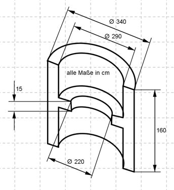

Aufgabe 145 Eine Firma stellt die dargestellten Sitzelemente aus Beton für Rastplätze usw. her. Wie viel m³ Beton braucht man für ein solches Element?  VRückwand = halber Hohlzylinder raußen = daußen/2 = 340 cm/2 = 170 cm rinnen = dinnen/2 = 290 cm/2 = 145 cm VRückwand = п * (raußen² - rinnen²) * h/2 VRückwand = п * (170außen² cm² - 145innen² cm²) * 160 cm/2 VRückwand = 3 956 400 cm³/2 = 1 978 200 cm³ = 1,978 m³ VSitzbank = halber Hohlzylinder raußen = daußen/2 = 290 cm/2 = 145 cm rinnen = dinnen/2 = 220 cm/2 = 110 cm VSitzbank = п * (raußen² - rinnen²) * hSitzbank/2 VSitzbank = п * (145außen² cm² - 110innen² cm²) * 15 cm/2 VSitzbank = 420 367 cm³/2 = 210 183 cm³ = 0,21 m³ VElement = 1,978 m³ + 0,21 m³ = 2,19 m³